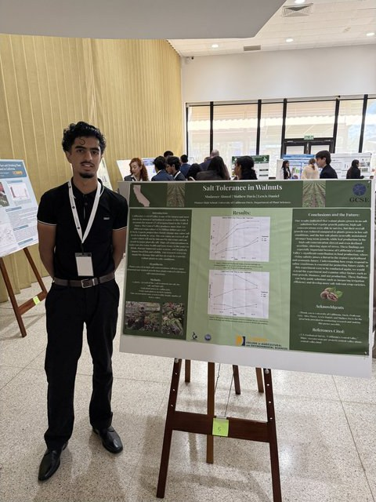

Who’s been to Davis?

Walked through the UC Davis Arboretum?

Stood in the middle of a working research farm?

Seen the inside of a real UC Davis lab?

You do real science.
Bring your own question, or build one with your mentor — fieldwork, lab work, data.
By the end of the year
You’ll have made
01
A research plan
Question, hypothesis, methods — built with your mentor in the fall.
02
A short film
A 3-minute video about your research, premiered at our winter Film Festival.
03
A printed poster
Presented at the UC Davis EnvironMentors Science Fair in May, to families and judges.



Four Pioneer students. Panama City.
June 2026 — the GCSE International Science Fair. All four went on full scholarships.

The Panama Canal
A boat through the Panama Canal. For some, a first trip out of the country.

The rainforest
One of three monkey species the crew spotted that week.

And they won.
Anna Callens: first place overall — the top award of the entire international fair. Bareera Rehman: Best Presentation.
Drop your info.
Scan the code and leave your name — we’ll loop you in when registration opens.
Questions? gmonroe@ucdavis.edu
![QR code linking to the EnvironMentors interest form]()
environmentors.ucdavis.edu